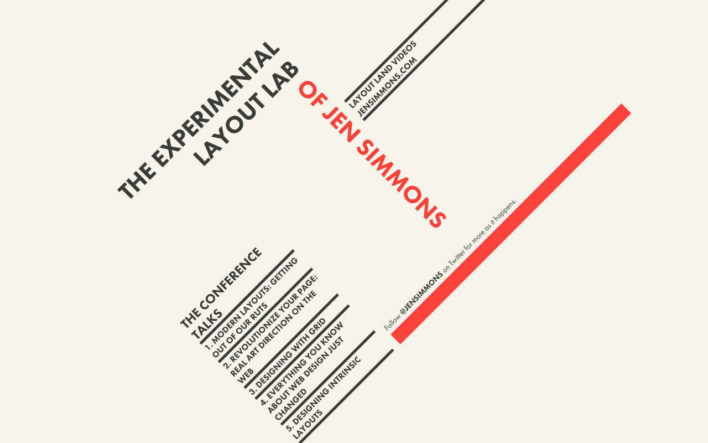

新しいCSS、新しいレイアウト。コンテナクエリを試す
自己紹介
- 腹筋ローラーの力を信じろ 最近は腹筋ローラーよりエアロバイクを漕いでいます
- 株式会社イエソド所属
- デザイナー

SaaS統制プラットフォームYESOD
お話しすること
- メディアクエリの問題
- コンテナクエリ
メディアクエリの問題
ありがちな辛さ
- ビューポートを基準にデバイスごとのレイアウトを設計
- 一部のコンテンツが特定の幅で微妙
- ブレイクポイントを追加するか
- あれ？別のレイアウト崩れた……
複雑……

- メディアクエリとコンポーネントの組み合わせの悪さ
- 同じようなコンポーネントでも、レイアウトの中で出現する場所によって別に定義しなくてはならないケースがある
- 本来全体と詳細で関心事は異なるはずなのに、メディアクエリという一つの土俵で解決しなくてはならない
- そのため、メディアクエリという作業台はどんどん散らかっていく
- コンポーネントは特定のコンテキストに依存しないほうが、再利用性が向上する
- モジュラー指向のコンポーネントと相性が悪い
コンポーネント自身が周囲のコンテキスとに応じてレイアウトを変えられればいいのに……。
コンテナクエリ
コンテナクエリ
- 現在仕様策定中
- コンテナ（親要素）に対するクエリを指定できる
- コンポーネントのコンテキストに応じたスタイルの記述が可能
if I had container queries available, 90% of the media queries I write would be container queries.
https://css-tricks.com/container-query-discussion/
Google Chromeで実験的に実装
chrome://flags/に入るEnable CSS Container QueriesをEnableへ

※実装は変更される可能性があります。策定中の仕様と比べても解離が存在します。コンテナクエリの情報を探すと、既に動作しないサンプルコードも見つかります。
Google Chromeの実装を試す
See the Pen My First Container Query by hiroki yokouchi (@8845musign) on CodePen.
HTML
<div class="component-wrapper">
<div class="component">
<!-- content -->
</div>
</div>
HTML
- 少なくとも2つの要素を準備する
- コンテナクエリでスタイリングする要素
- 今回はコンポーネントとして実装される想定
- 前述の要素のコンテナ（親）となる要素
CSS
.component-wrapper {
contain: layout inline-size style;
}
.component {
display: grid;
/* ... */
}
/* ... */
@container (min-width: 600px){
.component {
grid-template-rows: auto 1fr;
grid-template-columns: auto 1fr;
/* ... */
}
/* component-wrapper以下の要素を記述 */
}
containプロパティ
- コンテナ要素には現時点では
containプロパティが必要 containは、ある要素が文章ツリーから独立していることを示すためのプロパティ- 主にパフォーマンスの改善に利用
- コンテナクエリの動作においては、クエリで対応する対象を明示する
containプロパティ
layoutとstyleは今のところ必須（styleが抜けてて動かないサンプルコードがある）inline-sizeは水平軸のクエリに対応することを表す- 軸を指定する値は他に、や
block-size（垂直軸）やsize（両軸）が存在するらしい（らしい）
- 軸を指定する値は他に、や
うまくいかなさそうなケースも
- 例: スペースに応じて縦積み、横並べが変化するラベルとテキストフィールドをコンポーネントとして定義
- 入力項目によっては、最適な幅が変わる
- 項目ごとにレイアウトがバラバラになる可能性がある……。
うまくいかなさそうなケースも
- 複数のコンテナクエリによって実装されたコンポーネントを、同期的にレイアウトするのは難しいかもしれない
- コンポーネントのコンテナを選択的にできれば何とかなりそう
- 仕様がどうなるかわからない
とはいえ
コンテナクエリを使えば本質的な関心に集中ができる
- コンポーネントにとって最適なレイアウトアルゴリズムをデザイン
- どう表示されるかはアルゴリズムを使ってコンポーネント自身が決める
- モジュール式でデザインを進めることが多いWebアプリケーションとは相性が良い
CSS Gridでも似たようなことが可能
See the Pen Grid by hiroki yokouchi (@8845musign) on CodePen.
.container {
display: grid;
grid-template-columns: repeat(
auto-fill,
minmax(min(250px, 100%), 1fr)
);
}
250pxを下回りそうなタイミングで「折り返し」する- ポイントは
auto-fillとminmax() - 親要素が
250px以下になってもmin()のおかげで崩れない
- メディアクエリを使用せずにレスポンシブ
- コンポーネントごとの最適な幅を定義することで、アルゴリズム自身がレイアウトを決定
- ビューポートではなく、コンポーネント自体に着目している点でコンテナクエリと似ている
トップダウンからボトムアップへの発想の転換
CSSを学べば、デザインのやり方が変わる
- レイアウトのための道具が増えている。Flexbox、CSS Grid、コンテナクエリ……。
- どれも、Webの事情を踏まえた上で仕様が考えられている
- 効率的な実装と多様なユーザーのデバイスへの対応を両立するための良い制約になる
- ブラウザがやりやすいようにデザインすることが大切
Intrinsic Web Design
Jen Simmonsは、新しいCSSを基に実現できるデザインをIntrinsic Web Designと名付けた
THE EXPERIMENTAL LAYOUT LAB OF JEN SIMMONS

参考文献
Polyfill
最後に少し宣伝
Every Layout
Every Layout
- 「Every Layout(https://every-layout.dev/)」というサイトの翻訳本が10月末〜11月上旬に出版されます
- メディアクエリに依存しないレスポンシブWebデザインの方法論を論じています
- 「CSSとは、本来どう使うべきなのか」が学べる一冊です